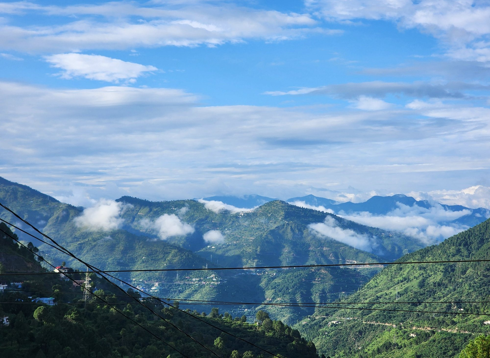

Shiwam Singh
I study the lowest few hundred metres of the atmosphere over the Himalaya, where weather models are hardest to get right.
PhD researcher in the Weather and Climate Research Group, Centre of Excellence in Disaster Mitigation and Management, IIT Roorkee
Weather models compute the exchange of heat, moisture and momentum at the ground with theory built for flat, uniform land. I test that theory against turbulence measurements from a mountain tower to see which parts still hold in complex terrain.
These errors do not stay at the ground. If the surface energy balance is wrong, the simulated convection is wrong too, and so is the forecast of heavy rain, which in the Himalaya means cloudbursts and landslides. I studied pure mathematics before this, so I am comfortable working inside the model equations.
- Peer-reviewed papers
- 3
- Talks and posters
- 10
- Countries presented in
- 5
- Schools and workshops
- 10
Surface layer parameterization
Monin-Obukhov similarity theory supplies the fluxes in almost every operational model. I compare stability functions against measured fluxes, especially at night when the air is stably stratified.
Try the stability function explorerTurbulence measurements
Sonic anemometers on a mountain flux tower sample the wind 20 times a second. From those records I compute the turbulent fluxes, after despiking, rotation and quality control.
How the measurements workHigh-resolution modelling
I run WRF at kilometre scale over Uttarakhand and the Northwest Himalaya, change surface layer code at source level, and test the results against stations and reanalysis.
Modelling workWeather where you are
Finding your location
Loading the forecast
Not an official forecast. For official forecasts, follow IMD. Weather data by Open-Meteo.com.
Where I have presented
Conferences and schools I have attended from Roorkee. Hover or tap a place to see what I did there.
Recent
Poster at Research Scholar's Day 2026, CoEDMM
Evaluation of surface-layer parameterizations in WRF against year-long turbulence observations over the Central Himalaya, presented on the International Day for Disaster Risk Reduction. I also ran the registration desk that morning. See the photos.
Talk at the EGU General Assembly 2026, Vienna
Parameterization of surface layer processes under stable conditions over a mountainous region, an oral talk in session AS2.1 with an Early Career Scientist travel award from EGU. See the photos.
Paper in Scientific Reports
A framework for an impact-based heat stress warning system for a coastal city in India.
AGU Fall Meeting 2025
Evaluation of different parameterizations for the computation of surface fluxes over a mountainous region.
Poster at INTROMET-2025, IITM Pune
Evaluation of different similarity functions under stable conditions over a mountainous region. See the photos.
Second prize for a poster at Research Scholar's Day, CoEDMM
Analysis of the observed behaviour of heat and momentum fluxes over a mountainous region. See the photos.
HPC4Climate Summer School, Max Planck Institute for Meteorology
Eleven days in Lauenburg, Germany, on a travel grant.
Photos
From conferences, schools and field visits.
Selected publications
-
Parameterization of surface layer processes in extreme weather conditions over mountainous region
Singh, S. and Srivastava, P.
-
A framework for impact-based heat stress warning system for a coastal city in India
Kacker, K., Utpal, A., Singh, S., Srivastava, P. and 3 others
-
Chronicle of destruction: the Wayanad landslide of July 30, 2024
Yunus, A.P., Sajinkumar, K.S., Gopinath, G. and 19 others, including Singh, S.

If you work on mountain boundary layers, flux measurements or WRF over complex terrain, write to me. I would like to hear about it.